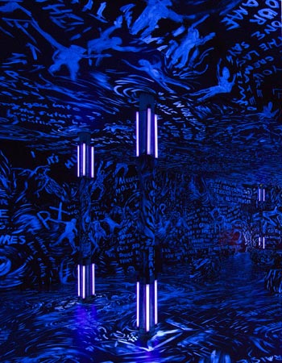

Lenguaje y Performance

El lenguaje como materia artística
El lenguaje ocupa un lugar central en la obra de Laurie Anderson. Sus piezas exploran cómo las palabras construyen significado y cómo pueden ser transformadas mediante la repetición, la fragmentación y el uso de tecnología.
A través de estas estrategias, el lenguaje deja de ser únicamente un medio de comunicación para convertirse en un material artístico. Sus obras revelan las tensiones entre lo que se dice, lo que se escucha y lo que se interpreta.

La performance como experiencia
La performance es uno de los principales formatos en los que desarrolla su trabajo. En sus presentaciones, combina música, proyecciones visuales y narración en vivo para crear experiencias inmersivas.
Estas performances no solo transmiten un contenido, sino que construyen un espacio de interacción con el público. La presencia del cuerpo, la voz y la tecnología genera una relación directa que redefine el rol del espectador.

Cruces entre arte y tecnología
Laurie Anderson ha sido una pionera en la incorporación de nuevas tecnologías en el arte. Desde instrumentos modificados hasta sistemas digitales, su trabajo investiga cómo la tecnología puede influir en la creación y la percepción artística.
Este cruce ha permitido ampliar las posibilidades del arte contemporáneo, integrando herramientas que transforman tanto los procesos como los resultados. Su obra continúa siendo relevante en un contexto donde la tecnología ocupa un lugar central en la cultura.